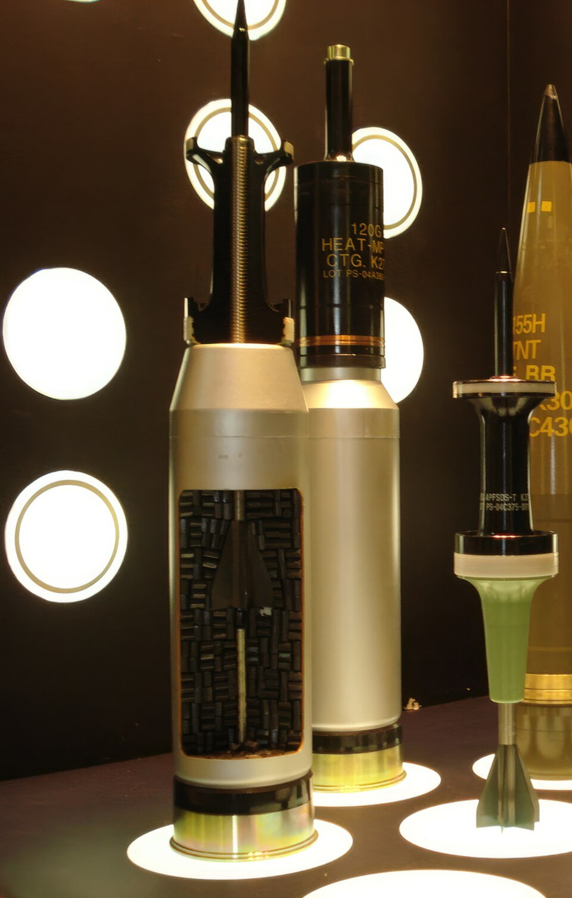

CALIBRE: 120mm.
TIPO: APFSDS.
V.INICIAL: 1,700m/s (6,100 km/h).
TIEMPO DE VUELO: 1seg = 2.000m.
PENETRACION: 600mm - 800mm a 2,000m.

open_in_newFoto hecha por: KIZILSUNGUR / Wikimedia Commons
Los proyectiles cinéticos nacieron en la Segunda Guerra Mundial como bloques macizos de acero (munición AP) para perforar tanques por fuerza bruta. Sin embargo, la posterior invención de los blindajes compuestos en la Guerra Fría —capaces de romper y desviar los proyectiles tradicionales— obligó a rediseñar por completo esta tecnología. Esto dio origen al proyectil moderno APFSDS, una "flecha" ultra delgada de alta densidad (hecha de tungsteno o uranio empobrecido) que se sostiene dentro del cañón mediante un armazón desechable llamado sabot, el cual se desprende en el aire para permitir que solo el penetrador central viaje a velocidades hipersónicas de entre Mach 5 y Mach 7.
Al carecer de carga explosiva, su funcionamiento se basa en concentrar toda su energía mecánica en un punto del tamaño de una moneda. Al impactar a tal velocidad, la física del choque genera un efecto hidrodinámico donde tanto el blindaje como el proyectil se comportan temporalmente como fluidos a alta presión, permitiendo que la flecha perfore el blindaje compuesto. Una vez que logra penetrar el blindaje, la fricción extrema disipa la energía cinética hacia el interior del vehículo, generando temperaturas muy altas que desatan una lluvia de metralla, sobrepresión mortal y la combustión instantánea de los tanques de combustible y municiones enemigos.
CALIBRE COMPLETO
SUBCALIBRADOS
PROTOTIPOS